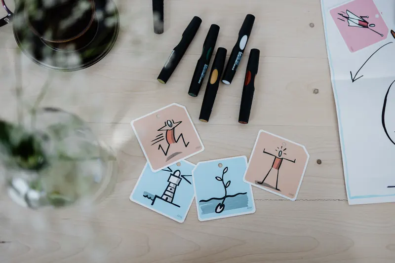
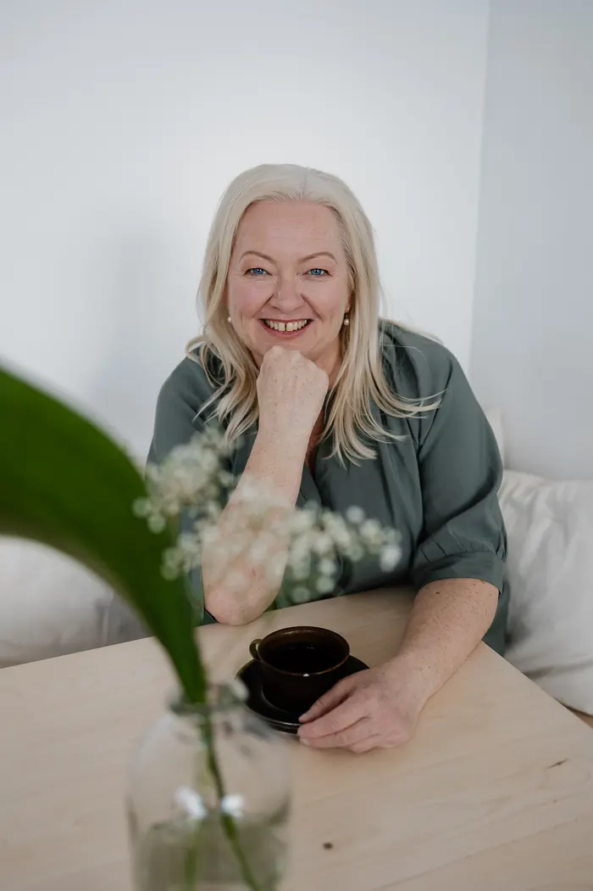
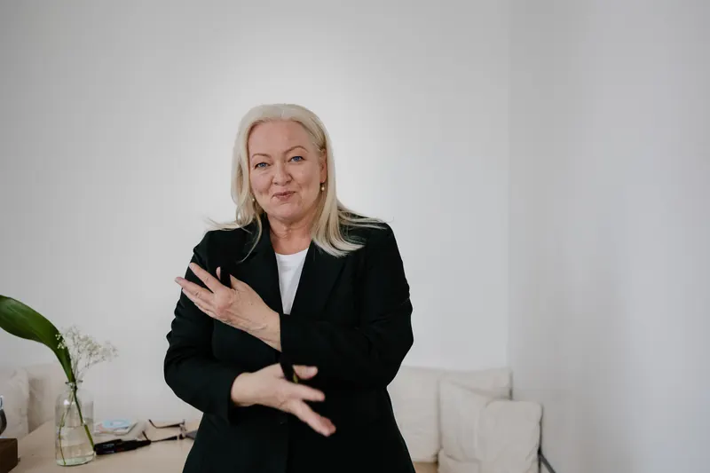
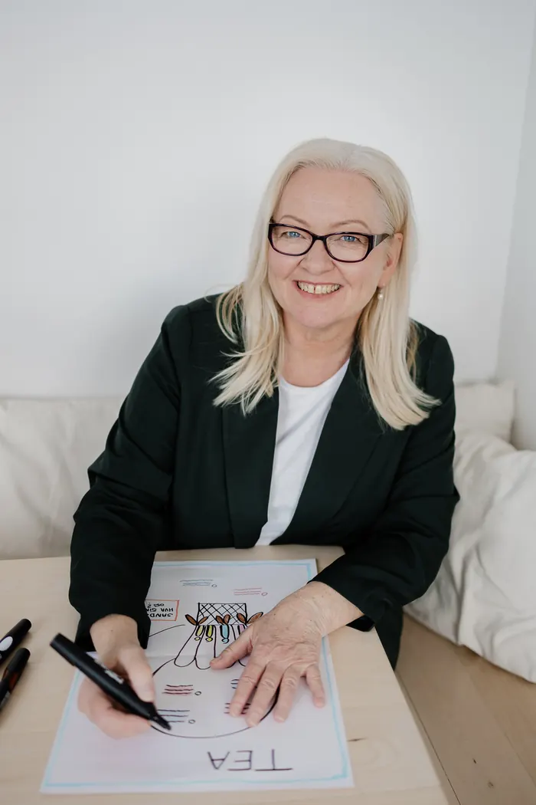
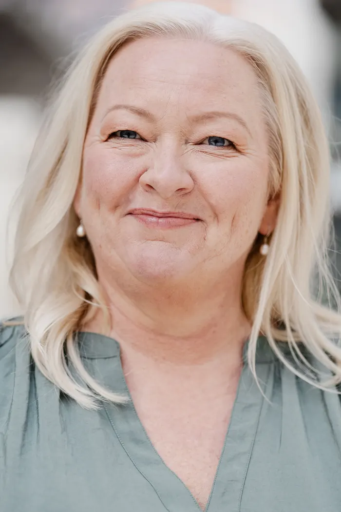
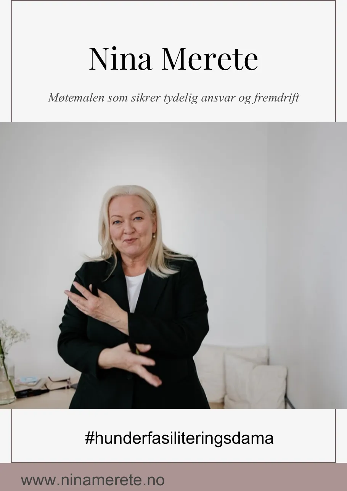

Hjelp med et konkret møte eller en utfordring
Et viktig møte, en workshop eller en prosess som må lykkes. Jeg hjelper dere å planlegge, strukturere og lede den.
Les mer om hjelp med et konkret møte eller en utfordringMed over 30 års erfaring fra ledelse, læring og utviklingsarbeid hjelper jeg ledere og organisasjoner med å planlegge og lede møter, workshops og prosesser som skaper engasjement, gode beslutninger og framdrift.

Som lærer, rektor og lederutvikler, i både offentlig og privat sektor, har jeg sett hva som skjer når møter ledes godt, og hva som skjer når de ikke gjør det. Denne erfaringen bruker jeg når jeg hjelper ledere og organisasjoner med å utvikle gode møter og prosesser.
Les mer om megVi starter der dere er, enten dere trenger hjelp til ett viktig møte eller vil bygge varige arbeidsmåter.

Et viktig møte, en workshop eller en prosess som må lykkes. Jeg hjelper dere å planlegge, strukturere og lede den.
Les mer om hjelp med et konkret møte eller en utfordring
Kurs og praktisk trening som gjør ledere, medarbeidere og interne ressurser tryggere i å lede møter og prosesser.
Les mer om bygge kompetanse i møteledelse og fasilitering
Arbeidsmåter og ressurser som gjør dere i stand til å lede møter og utviklingsprosesser på egen hånd.
Les mer om utvikle metoder, arbeidsmåter og verktøyi uken bruker toppledere i snitt i møter. Det er omtrent tre arbeidsdager.
Kilde: Perlow, Hadley og Eun, Harvard Business Review (2017)
ledere har aldri fått noen opplæring i å lede møter.
Kilde: Steven Rogelberg, The Surprising Science of Meetings (2019)
Møteledelse kan læres. Det er det jeg hjelper ledere og organisasjoner med. Se hvordan

Jeg jobber med møter i arbeidslivet og med dem som leder dem.
I over 30 år har jeg jobbet som lærer, rektor og lederutvikler, i både offentlig og privat sektor. Jeg har sett hva som skjer når møter ledes godt, og hva som skjer når de ikke gjør det. Forskjellen ligger sjelden i vilje. Den ligger i struktur, tydelighet og trygg ledelse.

En enkel struktur du kan bruke allerede i neste møte.
Fortell meg kort hva dere står i, så finner vi sammen ut hva som gir mest effekt. Den første samtalen er uforpliktende.
Eller send en e-post til kontakt@ninamerete.no